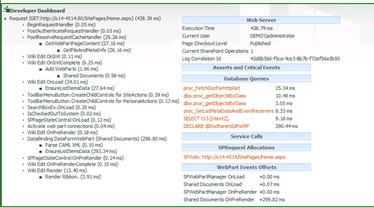

The SharePoint developer dashboard, when switched on, will render at the bottom of the page in SharePoint 2010 and appear as an icon in the top right hand corner of SharePoint 2013. If the DisplayLevel is set to OnDemand for SharePoint 2010 then the behaviour will be as SharePoint 2013, that is the developer dashboard will be visible at the click of the icon on the ribbon.

####Activating in PowerShell
$d = [Microsoft.SharePoint.Administration.SPWebService]::ContentService.DeveloperDashboardSettings
$d.DisplayLevel = 'OnDemand'
$d.TraceEnabled = $true
\$d.Update()
####Activatin using command line and stsadm
stsadm -o setproperty -pn developer-dashboard -pv OnDemand